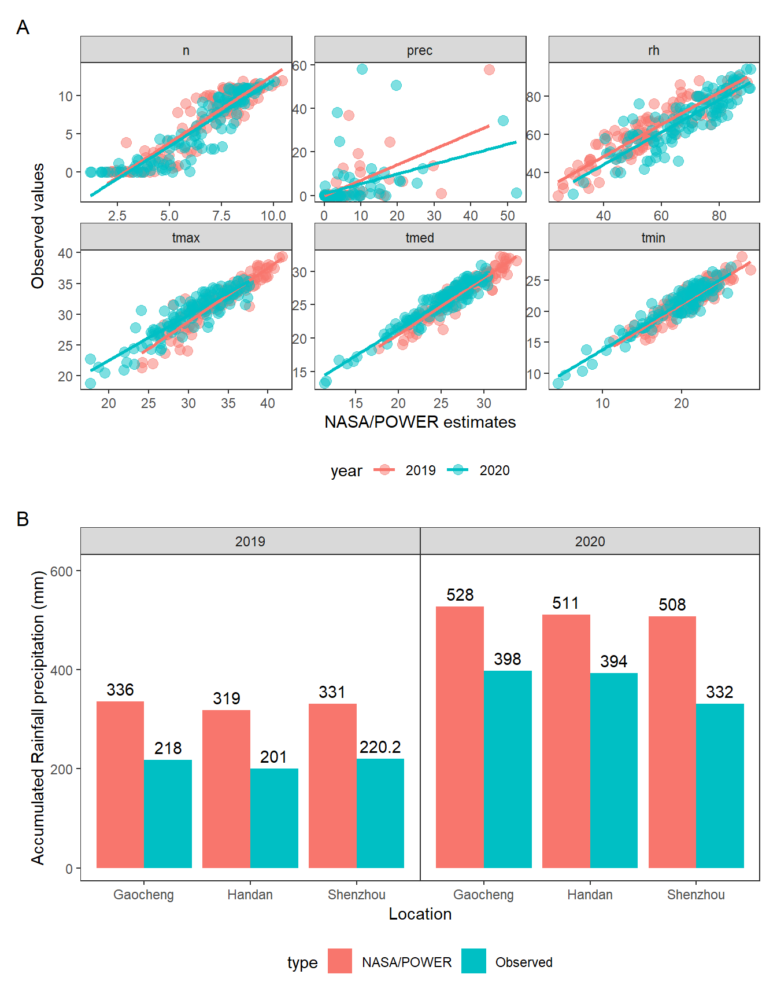

Supplementary figures
real <-
import("data/real_climate_data.xlsx") |>
mutate(data = ymd(data))
np <-
get_weather(env.id = "Shenzhou",
lat = 37.89,
lon = 115.71,
start.day = "01/05/2019",
end.day = "30/10/2020") |>
param_radiation(merge = TRUE) |>
dplyr::select(env,
data = YYYYMMDD,
tmed_np = T2M,
tmax_np = T2M_MAX,
tmin_np = T2M_MIN,
rh_np = RH2M,
prec_np = PRECTOT,
n_np = n)
## ------------------------------------------------
## ATTENTION: This function requires internet access
## ------------------------------------------------
## Connecting to the NASA POWER API Client, Sparks et al 2018
## https://docs.ropensci.org/nasapower
## ------------------------------------------------
## ----------------------------------------------------------------------
## Extraterrestrial radiation (RTA, MJ/m^2/day)
## Daylight hours (N, hours)
## Actual duration of sunshine (n, hours)
## ----------------------------------------------------------------------
correlation <-
np |>
right_join(real) |>
dplyr::select(env, data, matches("real|np")) |>
pivot_longer(-c(env, data)) |>
separate(name, into = c("var", "method")) |>
pivot_wider(names_from = method, values_from = value)
ggplot(correlation, aes(np, real)) +
facet_wrap(~var, scales = "free") +
geom_point(size = 2, alpha = 0.6) +
geom_smooth(method = "lm")
library(metan)
correlation |>
group_by(var) |>
doo(~corr_coef(., np, real)[["cor"]] |>
as.data.frame()) |>
distinct(var, .keep_all = TRUE) |>
dplyr::select(var, real)1 Dataset
df_traits <-
import("data/df_traits.csv") |>
metan::as_factor(1:6)
# long data
df_traits_long <-
df_traits |>
pivot_longer(GMC:HSW)
# grain yield mean in each environment
df_gy <-
df_traits |>
mean_by(ME, YEAR, .vars = GY)
# genotypic variance in each mega-environment
df_var_gy <-
df_traits |>
group_by(YEAR, ME) |>
do(lmer(GY ~ (1|GEN), data = .) |>
tidy(effects = "ran_pars") |>
filter(group == "GEN") |>
transmute(var = estimate^2))2 Figure S1
env_data <-
readRDS("data/env_data.Rdata") |>
mutate(me = case_when(
env %in% c("Yicheng") ~ "ME1",
env %in% c("Suixi", "Jieshou", "Nanyang") ~ "ME2",
env %in% c("Shenzhou", "Gaocheng", "Handan", "Dezhou") ~ "ME3",
env %in% c("Laizhou", "Jinan") ~ "ME4"
),
.after = env)
env_data_m <-
env_data |>
select(-daysFromStart) |>
mean_by(env, .vars = T2M:RTA) |>
column_to_rownames("env")
# compute the PCA with
pca_model <- PCA(env_data_m,
quali.sup = 1,
graph = FALSE)
fviz_contrib(pca_model, "var")Figure 2.1: biplot for PCA
id_var <- names(env_data)[11:ncol(env_data)]
names.window <- c('May','June','July','August','September', "October")
out <-
env_data |>
select(-c(env, year)) |>
rename(env = me) |>
env_typing(env.id = "env",
var.id = id_var,
by.interval = TRUE,
time.window = c(0, 15, 35, 65, 90, 120),
names.window = names.window,
quantiles = c(.01, .25, .50, .75, .975, .99)) |>
separate(env.variable,
into = c("var", "freq"),
sep = "_",
extra = "drop")3 Figure S2
# plot the distribution of envirotypes for dbp
variable <- "RTA"
# p1 <-
out |>
subset(var == variable) |> # change the variable here
mutate(interval = fct_relevel(interval, month.name[5:10])) |>
ggplot() +
geom_bar(aes(x=Freq, y=env,fill=freq),
position = "fill",
stat = "identity",
width = 1,
color = "white",
size=.2)+
facet_wrap(~interval, scales = "free", nrow = 6)+
scale_y_discrete(expand = c(0,0))+
scale_x_continuous(expand = c(0,0))+
labs(x = 'Relative frequency',
y = "Mega-Environment",
fill='Envirotype')+
theme(axis.title = element_text(size=12),
legend.text = element_text(size=9),
strip.text = element_text(size=12),
legend.title = element_text(size=12),
strip.background = element_rect(fill="gray95",size=1)) +
ggthemes::scale_fill_stata()
Figure 3.1: Quantiles for Extraterrestrial radiation over six months observed in the delineated mega-environments
4 Figure S3
# plot the distribution of envirotypes for dbp
variable <- "N"
# p1 <-
out |>
subset(var == variable) |> # change the variable here
mutate(interval = fct_relevel(interval, month.name[5:10])) |>
ggplot() +
geom_bar(aes(x=Freq, y=env,fill=freq),
position = "fill",
stat = "identity",
width = 1,
color = "white",
size=.2)+
facet_wrap(~interval, scales = "free", nrow = 6)+
scale_y_discrete(expand = c(0,0))+
scale_x_continuous(expand = c(0,0))+
labs(x = 'Relative frequency',
y = "Mega-Environment",
fill='Envirotype')+
theme(axis.title = element_text(size=12),
legend.text = element_text(size=9),
strip.text = element_text(size=12),
legend.title = element_text(size=12),
strip.background = element_rect(fill="gray95",size=1)) +
ggthemes::scale_fill_stata()Figure 4.1: Quantiles for daylight hours over six months observed in the delineated mega-environments
5 Figure S4
variable <- "PETP"
# p1 <-
out |>
subset(var == variable) |> # change the variable here
mutate(interval = fct_relevel(interval, month.name[5:10])) |>
ggplot() +
geom_bar(aes(x=Freq, y=env,fill=freq),
position = "fill",
stat = "identity",
width = 1,
color = "white",
size=.2)+
facet_wrap(~interval, scales = "free", nrow = 6)+
scale_y_discrete(expand = c(0,0))+
scale_x_continuous(expand = c(0,0))+
labs(x = 'Relative frequency',
y = "Mega-Environment",
fill='Envirotype')+
theme(axis.title = element_text(size=12),
legend.text = element_text(size=9),
strip.text = element_text(size=12),
legend.title = element_text(size=12),
strip.background = element_rect(fill="gray95",size=1)) +
ggthemes::scale_fill_stata()Figure 5.1: Quantiles for deficit by precipitation over six months observed in the delineated mega-environments
6 Figure S5
variable <- "VPD"
# p1 <-
out |>
subset(var == variable) |> # change the variable here
mutate(interval = fct_relevel(interval, month.name[5:10])) |>
ggplot() +
geom_bar(aes(x=Freq, y=env,fill=freq),
position = "fill",
stat = "identity",
width = 1,
color = "white",
size=.2)+
facet_wrap(~interval, scales = "free", nrow = 6)+
scale_y_discrete(expand = c(0,0))+
scale_x_continuous(expand = c(0,0))+
labs(x = 'Relative frequency',
y = "Mega-Environment",
fill='Envirotype')+
theme(axis.title = element_text(size=12),
legend.text = element_text(size=9),
strip.text = element_text(size=12),
legend.title = element_text(size=12),
strip.background = element_rect(fill="gray95",size=1)) +
ggthemes::scale_fill_stata()
Figure 6.1: Quantiles for vapor pressure deficit over six months observed in the delineated mega-environments
Figure S6

Figure 6.2: Phenotypic correlation between the studied traits within ME1 (A), ME2 (B), and ME3 (C), and ME4 (D).
Figure S7

Figure 6.3: Mantel’s correlation between the phenotypic correlation matrices observed in each mega-environment
Figure S8

Figure 6.4: The strengths and weaknesses view of the selected genotypes is shown as the proportion of each factor on the computed multi-trait stability index (MTSI). The smallest the proportion explained by a factor (closer to the external edge), the closer the traits within that factor are to the ideotype. The dashed line shows the theoretical value if all the factors had contributed equally.
Figure S9
ME1
Figure 6.5: Average value for the studied trait across ME1
ME2

Figure 6.6: Average value for the studied trait across ME2
ME3
Figure 6.7: Average value for the studied trait across ME3
ME4

Figure 6.8: Average value for the studied trait across ME4
Figure S10